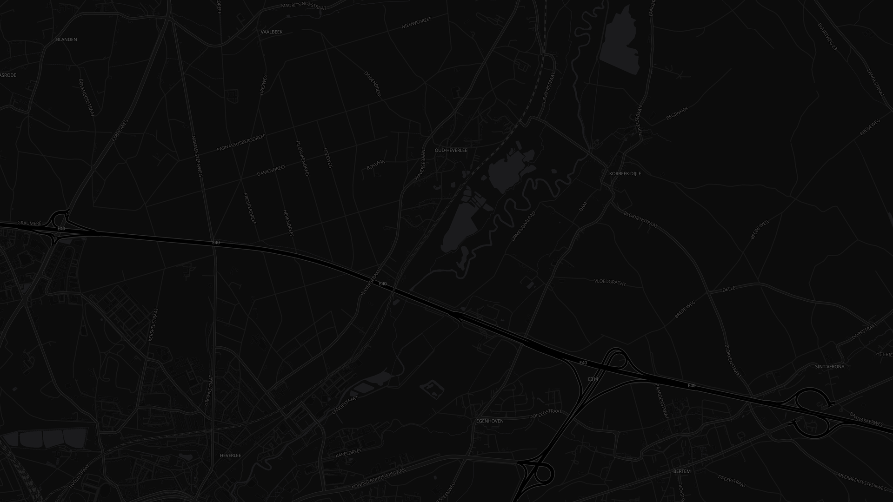

Press START at the door. From there, the app splits your ride into sectors and times each one against your own recent history. No setup, nothing to configure mid-ride.
Bike, run or walk. Ride a road once and, at STOP, name where you started and ended. That ride becomes the route: its line and its sectors, ready to race next time.
Lines drawn across your path at the quarter points of the route, moved clear of anywhere the reference ride stood still, such as a red light or a crossing. You never see them. You only feel the moment one falls behind you.
Not a record from one perfect ride: the rolling window of your last ten laps on that stretch. Recent you, not peak you. Only your first ride on a route has no window and stays plain. Every ride after it is judged, the window growing toward ten.

© OpenStreetMap contributors · OpenFreeMap
Every sector is measured against a comparison window: your last 10 rides on that exact route.
Best. Faster than every one of your last ten rides through this sector.
Better than average. Faster than your recent average for this sector, but not the best.
Below average. Slower than your recent average for this sector.
Colour only shows once there is something to compare against. Your first ride on a route sets the mark and stays plain. The second ride can go purple or yellow. From the third ride on, green joins in.
Your lap slots into a ranking of your last ten rides on this route. The window rolls: every new ride pushes the oldest out, so even a best time leaves the window within ten rides and the top spot comes back within reach. There is always something to go for.
A bit better every day.
Your only rival is the last ten versions of you.